|
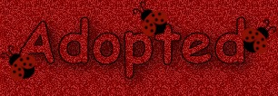
Nothing on this site or pages is available for download...
please visit the "adoption" centers to request memberships or adoptables.
My mom made me this "walking" ladybug! :)
Some MORE stuff I "adopted" from the internet.
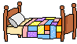 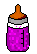 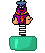 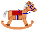
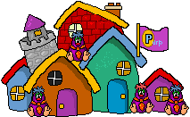
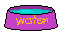 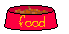
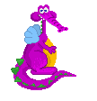
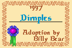 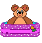
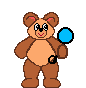 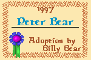
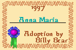 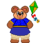 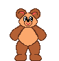 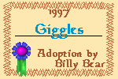
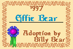 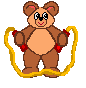 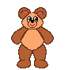 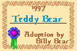
My mom's a member at Snugglebug!
If you want to be a member and adopt, you must follow the rules.
She's got a LOT of cuties! :)
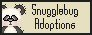
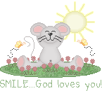
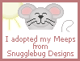
| |
Mom adopted these ones below from
TSF!
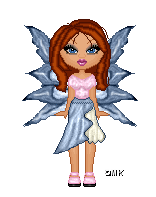
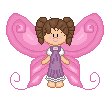
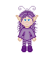
The adoptions below are from The Tea Cozy! Adorable!!
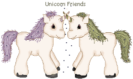
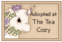
|
|
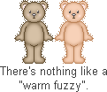
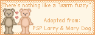
|
|
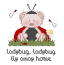 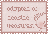 |
|
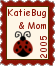
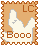
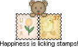 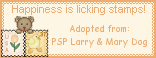
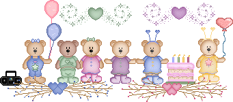 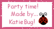
(the "party" created by KATIEBUG! *nodding*,
playing with a Teddymaker at Teddy'sLand)
Here's a doll made by me...KatieBug! I've been "making" dollz at DollzMania since I was 4! :)
Mom says it's a lot like when she was little and played with "paper dolls"!


Backgrounds, banner, buttons and "ladybug" created by My Mom


Mom is a proud member of:


|